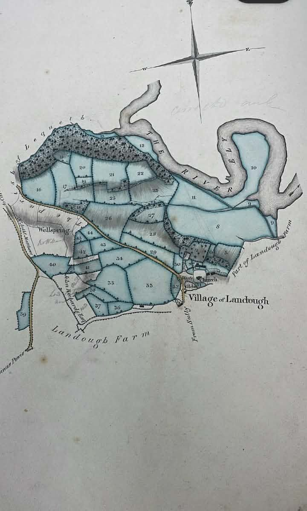

St Dochdwy’s, beside the farm, thought to be an early monastery (SOURCE PENDING; published reference awaited)
Source: archaeology / Master Timeline, c. 650
 Cover: “Police wait outside the farmhouse”, April 1988 (EV-0086)
Cover: “Police wait outside the farmhouse”, April 1988 (EV-0086)
Great House Farm (Tŷ Mawr) · Llandough-juxta-Penarth
The family archive timeline. The newspaper and TV reports now appear as posts by each paper on the feed.
96 posts from c. 650 to 2004, oldest first. Each is dated to the event, not to when it was posted. Images appear only on the post whose date they match; undated images are in Photos.
St Dochdwy’s, beside the farm, thought to be an early monastery (SOURCE PENDING; published reference awaited)
Source: archaeology / Master Timeline, c. 650
Williams family occupation begins, per Mary (Nancy) Williams’s statement (earlier written source awaited)
Source: family origins / Master Timeline, 1667
Stewart’s survey of the Bute estates, plan 19 “Cedfin or Ty Mawr Farm”: 139a 3r 8p, including 20a 2r 35p of wood; tenant read as John Gedrick; 10a 3r 39p of “late Thos. Williams” land added (Glamorgan Archives DB/E/1)

Source: EV-0211 / Master Timeline, 1824
John Williams succeeds his father in the tenancy of the farm, per a 1904 press report: “He succeeded his father in the tenancy of the farm in 1855” (Cardiff Times, 16 Jul 1904, which calls him “of Llandough Farm”; that he is the Great House John Williams is an inference)
Source: Cardiff Times 1904 · EV-0224 / Master Timeline, 1855
Llandough poor rate: John Williams rated for glebe land, owner Rev. H.H. Rickards (rate book, reference pending)
Source: EV-0212 / Master Timeline, 9 April 1872
Llandough poor rate: John Williams rated for a farm, owner Lord Bute, c. 76a, gross £41 0s (same sequence in the rate of 20 Aug 187?, year unread); Lord Bute rated for woods in hand, 32a 3r 39p; Daniel Thomas & Son rated for a lime kiln and quarry
Source: EV-0212 / Master Timeline, October 1876
Bute serves notice to quit (Mary (Nancy) Williams’s statement)
Source: notice to quit / Master Timeline, 1877
Mary (Nancy) Williams’s statement reports a sale of the farmhouse/buildings and about 10 acres to Daniel Thomas, with about 9 acres retained by Bute; original deed/plan missing

Source: 1877 sale · plan / Master Timeline, 1877
Date reported for a lease to John Williams in Mary (Nancy) Williams’s account; no matching Llandough instrument has been identified. The checked DBDT/79/1 item is a 2 May 1877 lease for Pembroke Terrace, Cardiff; other similarly named Cardiff lease references remain catalogue leads, not verified Llandough evidence (SC-20; 1877 Agreement). A Bute Trustees counterpart lease of this date to John Williams, builder, of System Street, Roath, for a plot in Clyde Street, Roath, is photographed; it is not the farm (EV-0213; Excluded).
Source: SC-20 · 1877 Agreement · EV-0213 · Excluded / Master Timeline, 6 November 1877
The 1881 census records John Williams, 53, “Farmer of 170[? or 120] ac.”, with his wife Mary and children at “Llandough Home Farm”, Llandough (RG11/5288 p.2). Our case: the census mixed up the Llandough farm with Great House Farm, so this is Great House Farm under another name

Source: EV-0224 / Master Timeline, 3 April 1881
Three geese taken from “Mr. John Williams, Great House Farm, Llandough”; the court report is contemporary evidence of his occupation
Source: press 1891 / Master Timeline, 11 November 1891
South Wales Star reports geese taken, “the property of Mr. John Williams, Great House Farm, Llandough, on November 11, 1891”
Source: South Wales Star 1892 · EV-0224 / Master Timeline, 10 June 1892
Marconi’s wireless trials at Lavernock Point, which our case links to the farm
Source: press 1897 / Master Timeline, May 1897
Marquess of Bute’s coppice woods, incl. “Cwm Cydfin Wood, Leckwith and Llandough”, offered at auction (Stephenson & Alexander, particular 192; land or coppice only not stated) (EV-0219)
Source: EV-0219 / Master Timeline, 29 November 1902
Bute conveyance, later on the WA231076 file and noted on WA735527
Source: deeds before registration / Master Timeline, 23 February 1905
Mary (Nancy) Williams’s grandfather dies; John Williams takes over both tenancies (Mary (Nancy) Williams’s statement)
Source: John Williams / Master Timeline, 1908
Barry Dock News, p.3, “Court Leet at Llandough”: the court leet and court baron of the lordship of Bute passed “a vote of sympathy … with the family of the late Mr. John Williams, Great House, Llandough, for many years a juror of the court”. Fits Mary (Nancy) Williams’s statement that her grandfather died in 1908; jury service shows nothing about ownership (EV-0243)
Source: EV-0243 / Master Timeline, 23 October 1908
Frederick Buckler born c. 1908–09 (derived from his death in 1967 aged 58: GRO death index, East Glamorgan 8b 364)
Source: Frederick Buckler / Master Timeline, c. 1908–09
Bute lets the whole farm to John Williams on a yearly tenancy (1987 judgment; ECHR decision)
Source: 1916 tenancy / Master Timeline, February 1916
Agreement on the WA231076 file; contents and effect unknown
Source: deeds before registration / Master Timeline, 15 May 1924
Last quarry machinery leaves and final rent of about £4 is paid to Alfred Thomas; on our title case, the 1877 arrangement then takes effect and the full Parcel A passes to the Williams family (Mary (Nancy) Williams’s statement; receipt missing) [PENDING: EV-0016]
Source: EV-0016 · 1928 / Master Timeline, 1928
Mary (Nancy) Williams marries Frederick Buckler, who joins her at the farmhouse
Source: marriage / Master Timeline, 1936
Bute reversion conveyed to Western Ground Rents; the 1938 deed itself is not yet obtained. The 1965 contract for the Llandough school site names “a Conveyance on sale dated 25th December 1938” as its root of title; that conveyance’s parties and parcels are not yet known.
Source: EV-0216 · EV-0019 · 1938 / Master Timeline, 25 December 1938
Revised tenancy from WGR to John Williams; plan shows the fields east of the house (EV-0023)

Source: EV-0023 · 1939 tenancy · plan / Master Timeline, May 1939
12 years’ rent-free occupation of the house parcel since 1928 complete, on Mary (Nancy) Williams’s statement that rent was last paid in 1928 (c.1974; Mary (Nancy) Williams testimony) Our case: the usual 12-year waiting period had run.
Source: Mary (Nancy) Williams testimony · c. 1940 / Master Timeline, c. 1940
Western Ground Rents gives c.109 acres of Leckwith Woods to Cardiff council (offered and accepted 1940, completed April 1942; secondary source); no Llandough land shown (EV-0220)
Source: EV-0220 / Master Timeline, 1940 – April 1942
National Farm Survey, Penarth parish bundle (TNA MAF 32/1220/39; catalogue entry, not seen). That Great House Farm’s form is in this bundle is an inference (Llandough was added to Penarth in 1902); the forms of this series generally record occupier, owner and water supply (EV-0241)
Source: EV-0241 / Master Timeline, 1941–43
WAEC dissatisfied; Frederick runs the farm as manager for John Williams (Mary (Nancy) Williams’s statement)
Source: 1944 / Master Timeline, 1944
Note and sketch of the old village layout by Mrs Nancy Buckler (Mary (Nancy) Buckler née Williams) of Great House Farm; the note names her father as John Williams of Great House Farm, “born about 1867” (Glamorgan Archives D/D XJF 64/30–31)
Source: EV-0155 / Master Timeline, c. 1945–1955
William (Billy) Buckler born at the farm on 25 August 1948; lives there until 1988
Source: William / Master Timeline, 25 August 1948 (1987 Court of Appeal judgment)
Start of the water cut-off to the farmhouse and grounds, inferred from the 1958 statement of Mary (Nancy) Buckler née Williams that it had been cut off “for nearly 10 years by order of Western Ground Rents” (EV-0037, snippet only). Per Branwen (voice testimony), cattle drowned in the River Ely trying to reach water (testimony; no record found). Date conflict: SC-48.
Source: EV-0037 · testimony · SC-48 / Master Timeline, c. 1948–49
John Williams’s tenancy surrendered and Frederick’s unwritten yearly agricultural tenancy from WGR begins for Parcel B. [SOURCE PENDING] This was the first later attempt to make Mary (Nancy) Williams’s separate Parcel-A occupation appear permissive; that attempt failed Our case: a REJECTED permissive occupancy ploy.
Source: Frederick’s tenancy · surrender / Master Timeline, 2 February 1949
Mary (Nancy) Williams reports that family papers including the title/farm agreement were missing from the farmhouse blanket box; a lodger later told her he had taken them at The landlords’ agent’s request (Mary (Nancy) Williams, witness statement c.1974 (Mary (Nancy) Williams testimony); papers missing)
Source: Mary (Nancy) Williams testimony · papers missing / Master Timeline, June 1950 – c. 1952
Landlords’ agents decide not to proceed with the letting to Frederick
Source: 1952 letter / Master Timeline, 10 October 1952
Frederick’s last rent payment
Source: Frederick’s tenancy / Master Timeline, 1953
Notice to quit expires; a High Court possession order (Order 14) against Frederick alone, worded for the whole farm, follows; Mary (Nancy) Williams not a party
Source: 1955 order / Master Timeline, 2 February 1955
While enforcing possession of Parcel B, WGR also seized, on our case (SOURCE PENDING), the Parcel-A forest north of the house and the south-east ground later registered as VG41 [PENDING: EV-0034]. Mary (Nancy) Williams retained the occupied farmhouse/buildings/garden group after fierce resistance; that group was not the full extent of Parcel A
Source: EV-0034 · enforcement / Master Timeline, 4 July 1955
Western Mail, p.6: an item carrying the name “Mrs. M. D. BUCKLER … Llandough” (search-result snippet only; content and subject unknown) (EV-0242)
Source: EV-0242 / Master Timeline, 9 October 1957
Days 20–24 of the Ministry of Housing and Local Government public local inquiry into objections to the Glamorgan County Council Development Plan (Area No. 2); verbatim record at TNA BD 28/177 (catalogue entry; not yet read). Related plan files 1957–63: BD 28/133, BD 28/198, HLG 119, MAF 112/1108 (EV-0239) (EV-0240)
Source: EV-0239 · EV-0240 / Master Timeline, 19 November – 11 December 1958
Western Mail, p.7 (snippet only, EV-0037): “Mrs. Buckler [stated] that the water was cut off from her house and grounds for nearly 10 years by order of Western Ground Rents.” She told the planning committee: “This is a Welsh case of Crichel Down.” The water date conflicts with a c.1988 cut-off (SC-48). The Press Archive also lists a Western Mail report, not yet checked against the original, “It’s a Crichel Down … woman farmer”, said to record Mrs Buckler alleging that councils and Western Ground Rents had “walked in and taken” the family’s land. The original article and exact wording have not been recovered; if authenticated, this would evidence a contemporary public objection, not prove ownership or unlawful taking. The reported reference to “Cardiff Rural Council” must be reconciled with the administrative correction in SC-22. Press Archive — references not yet checked
Source: EV-0037 · SC-48 · SC-22 · Press Archive — references not yet checked / Master Timeline, 20 November 1958
Mary (Nancy) Williams refuses a tenancy of the occupied farmhouse/buildings/garden group and asserts ownership; this was the area she could physically defend after the 1955 seizure, not the full Parcel-A extent Our case: a REJECTED permissive occupancy ploy.
Source: 1959 refusal / Master Timeline, 1959
Deed on the WA231076 file; contents unknown
Source: deeds before registration / Master Timeline, 29 March 1961
Cardiff County Court order against Frederick and Mary (Nancy) Buckler née Williams for the occupied farmhouse/buildings/garden group; not enforced [PENDING: EV-0041]. This was within Parcel A but not the full Parcel-A estate
Source: EV-0041 · 1962 order / Master Timeline, 11 December 1962
Three skeletons reported in utility-trench works (secondary research-file account; underlying 1963 record awaited)
Source: archaeology / Master Timeline, 1963
Mesne profits partly enforced against Frederick under the house-group proceedings
Source: committal / Master Timeline, June 1963
WGR will not let Frederick the fields; weekly tenancy of the farmhouse offered to “Mrs Williams” on 2 Mar, not signed
Source: 1965 offer / Master Timeline, January–March 1965
Frederick dies aged 58 (GRO death index); Mary (Nancy) Williams reverts to Williams and stays on (an estate paper gives Dec 1965; family takes 1967)
Source: death / Master Timeline, 1967
WGR sells Parcel B (and an interest in the 1962 order on Parcel A) to BP Pension Trust; deed missing from the Land Registry files
Source: conveyances / Master Timeline, 31 December 1969
Land by Leckwith Road registered as village green VG41; current reconstruction places it in Parcel A, boundary to be confirmed (timeline ref. GHF-E033-VG41)
Source: redevelopment / Master Timeline, 16 June 1970
William Rees’s letter “Grievous loss” in the Western Mail, against demolition
Source: preservation campaign · transcript / Master Timeline, 19 November 197? (year unclear)
Cwm Cydfin, Leckwith, notified as a Site of Special Scientific Interest (SSSI 0524) (EV-0218)
Source: EV-0218 / Master Timeline, 1972
Earlier housing permission on the site, while Mary (Nancy) Williams lived in the house
Source: redevelopment / Master Timeline, 25 July 1972
Measured survey of the farmhouse
Source: archaeology / Master Timeline, 1974
Mary (Nancy) Williams opens the farmhouse to the public “to show what the nation is losing”; petition of about 1,000; Daily Telegraph report, 16 Apr
Source: open day · transcript / Master Timeline, 15 April 1974
New possession action, adjourned part heard on 3 July 1974 for a formal defence; Mary (Nancy) Williams’s defence pleads ownership under the Limitation Act 1939; never relisted
Source: 1974 action / Master Timeline, 3 July 1974
Leave to enforce the 1962 order; appeal for want of notice
Source: warrant / Master Timeline, 19 September 1974
Warrant withdrawn; BP licence letters sent the same day
Source: licence letters / Master Timeline, 31 October 1974
BP Pension Trust to BP Properties
Source: conveyances / Master Timeline, 23 May 1975
Llandough Roman Villa excavation (GGAT00768s) — a separate site
Source: archaeology · press 1980 / Master Timeline, 1978–79
MP for Merthyr Tydfil (1980) criticised in the House of Commons how the BP pension fund, as buyer of Western Ground Rents, was treating householders’ requests. The debate does not mention Great House Farm; it concerns the WGR–BP ownership chain.

Source: EV-0057 · GHF-E090-N16, 22 May 1980
GGAT recommends investigation before development
Source: archaeology / Master Timeline, October 1982
BP Pension Trust to BP Properties; first registration applied for, WA231076
Source: first registration · scrutiny / Master Timeline, 19–30 November 1982
First registration applied for, WA240304 The record shows a second first-registration application after WA231076 (30 Nov 1982), and the two titles amalgamated on an application of 2 Feb 1987. Our case calls this a clandestine registration; that is
Source: first registration / Master Timeline, 23 February 1983
Fire at GGAT’s Swansea warehouse destroys the finds from the Llandough Roman villa site
Source: press 1983 / Master Timeline, 13 March 1983
Mary (Nancy) Williams dies at the farmhouse; William inherits
Source: Mary (Nancy) Williams’s death · William / Master Timeline, 26 March 1983
Library copy of the Bute–Thomas deed reported missing (SOURCE PENDING)
Source: library copy / Master Timeline, 1984
BP writ for possession
Source: writ / Master Timeline, 22 May 1984
Cwm Cydfin SSSI re-notified (NRW record); owner/occupier list not seen (EV-0218) [PENDING: EV-0221]
Source: EV-0218 · EV-0221 / Master Timeline, 9 December 1985
High Court hearing (Hollis J); judgment for BP given 24 Jul 1986, possession suspended six months (Court of Appeal judgment; South Wales Echo, 25 Jul 1986, p.3) [PENDING: EV-0074]
Source: EV-0074 · High Court / Master Timeline, 10 July 1986
Llandough Community Council: “no justification” for submitting a right of way from Great House Farm to the Swiss Cottages; no further action. Same minutes name Debenham Tewson as “the agents for BP Properties”; payments include “Debenham Tewson Licence Fee £5.50” (committee date pending)
Source: EV-0214 / Master Timeline, 1987
Application to amalgamate the two titles, during the appeal
Source: amalgamation · scrutiny / Master Timeline, 2 February 1987
Court of Appeal dismisses the appeal in BP Properties Ltd v Buckler [1987] EWCA Civ 2 (Dillon LJ, with Mustill LJ and Sir Edward Eveleigh agreeing). The judgment records that Mary (Nancy) Williams’s title documents were never produced.
Source: BP Properties Ltd v Buckler · Court of Appeal · what it omits / Master Timeline, 31 July 1987
Council minutes (meeting of 17 Dec 1987): a resident’s letter asks for VG41 to be “extended up to the farm wall”; the farm roadway called “an unofficial access route”; the council’s Penlan Road licence recorded as terminated by Debenham Tewson
Source: EV-0214 / Master Timeline, December 1987
House of Lords refuses leave to appeal
Source: House of Lords / Master Timeline, 3 March 1988
Eviction attempt fails: drive blocked by a tractor, doors axed, William holds the bailiffs off with a chainsaw; bailiffs withdraw after four hours

Source: press / Master Timeline, 29 April 1988
William applies to the European Commission of Human Rights
Source: ECHR / Master Timeline, 3 May 1988
MP for Cardiff South and Penarth (1988) asks the Lord Chancellor to look at the case (South Wales Echo)
Source: press / Master Timeline, 12 May 1988
Cadw inspects the farmhouse for listing


Source: Cadw 1988 / Master Timeline, 29 July 1988
Possession obtained; bailiffs force entry (press: Wednesday 30 Nov); William taken to Llandough Hospital
Source: press / Master Timeline, 29/30 November 1988
Outbuildings, then the farmhouse, demolished; the bulldozers moved in just after 4am on 6 Dec
Source: press / Master Timeline, 30 November – 6 December 1988
Interim High Court injunction that the farmhouse must not be touched; Cadw considers spot-listing
Source: press / Master Timeline, 2–3 December 1988
Judge, Cardiff County Court (1988) refuses to continue the injunction pending the ECHR application; Cadw declines to list
Source: press / Master Timeline, 5 December 1988
Lorries begin clearing the site
Source: press / Master Timeline, 20 March 1989
European Commission declares the application inadmissible (EV-0122)

Source: EV-0122 · ECHR / Master Timeline, 14 April 1989
Outline application 89/01396/OUT (form dated October; received 8 November)
Source: redevelopment / Master Timeline, October – 8 November 1989
BP sells Oakview (WA513690)
Source: later dealings / Master Timeline, 10 October 1989
Further GGAT comments (Appendix B), missing from the file
Source: redevelopment / Master Timeline, 8 February 1990
Outline permission granted with 18 conditions

Source: redevelopment / Master Timeline, 13 March 1990
William (Billy) Buckler dies
Source: William / Master Timeline, 29 May 1990
GGAT field evaluation finds early-medieval burials

Source: archaeology / Master Timeline, August 1990
Reserved matters 92/00671/RES (20 houses) submitted and approved
Source: redevelopment / Master Timeline, 14 May – 3 September 1992
Groundworks begin before the archaeological condition is met
Source: archaeology / Master Timeline, December 1993
BP transfers to Ideal Homes
Source: later dealings / Master Timeline, 3 December 1993
Home Office licence to remove human remains (21 Mar); “preservation by record” agreed (4 May); Cotswold Archaeological Trust excavates the cemetery
Source: archaeology / Master Timeline, 1994
Woodland (WA735527) transferred to Forest of Cardiff
Source: woodland / Master Timeline, 10 November 1994
You’ve reached today. Back to the top ↑